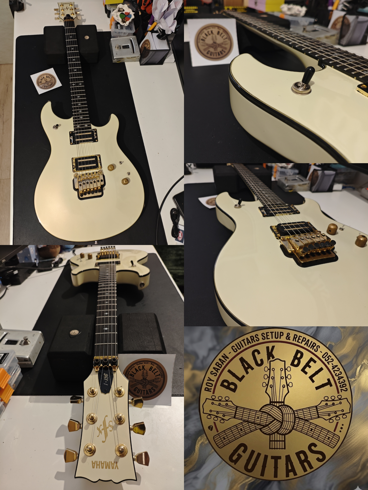
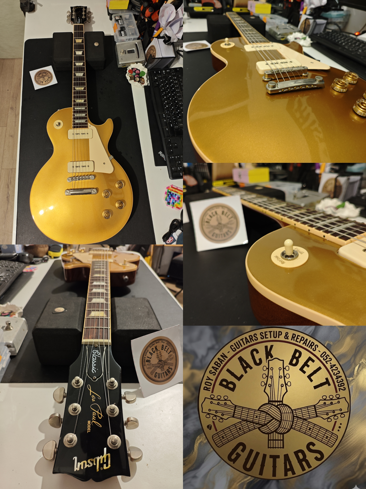
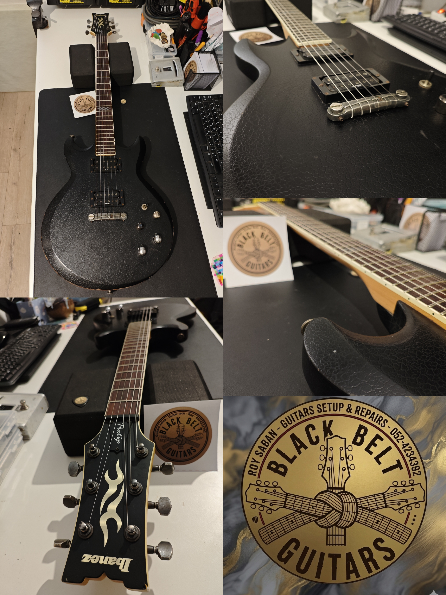
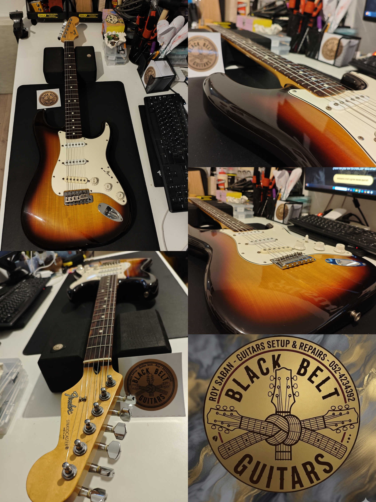

סטאפ לגיטרה ותיקון גיטרות במיינדסט של חגורה שחורה. שירות מקצועי, יסודי ומהיר לנגנים בכפר יונה, נתניה, קדימה צורן, אבן יהודה וכל אזור השרון.
לתיאום סטאפ ותיקון גיטרה בוואטסאפבג'יו-ג'יטסו ברזילאי, חגורה שחורה היא סמל לרמת דיוק מקסימלית ואפס פשרות – וזה בדיוק הסטנדרט שבו מתנהלת מעבדת הגיטרות Black Belt Guitars. אם אתם מחפשים סטאפ לגיטרה בנתניה, תיקון גיטרות בקדימה צורן, אבן יהודה ועמק חפר, או טיפול מקצועי לכלי שלכם באזור השרון, הגעתם למקום הנכון. המעבדה נותנת מענה מלא הכולל סטאפ לגיטרה אקוסטית, סטאפ לגיטרה קלאסית, סטאפ לבס, איזון גשר פלויד רוז (Floyd Rose), חיווט אלקטרוניקה מורכב ושיוף שריגים קפדני. כל גיטרה שיוצאת משולחן העבודה מקבלת כיוון אקשן ואינטונציה מיקרוסקופי כדי להבטיח את חוויית הנגינה הנוחה והחלקה ביותר עבורכם.
כיוון אקשן, אינטונציה, טיפול לחות, ניקוי, שימון והחלפת מיתרים קפדנית המותאמת אישית לחשמליות, אקוסטיות, קלאסיות, גיטרות 12 מיתרים ובס.
כיוון ואיזון מורכב של גשר פלויד רוז (Floyd Rose), גשרים צפים וגשרי טרמולו, החלפת קפיצים וכיוון מתח מדויק לשמירה על כיוון יציב.
החלפת פיקאפים, פוטנציומטרים, סוויצ'ים, שדרוגי קאסטום וחיווטים מתקדמים, לצד בידוד ומיגון רעשים (Shielding) לחשמליות ובס.
יישור ואיזון סריגים לא מפולסים, שיוף שריגים, הכתרה (Crowning), בניית נאט (Nut) עצם אמיתי ותיקון שברים בראש ובצוואר.






אני מבין כמה קשה להיות בלי כלי הנגינה שלכם. רוב עבודות הסטאפ במעבדה שלי בכפר יונה מסתיימות תוך 24 עד 48 שעות בלבד. במקרים מורכבים יותר (כמו שיוף שריגים מלא או שיקום אלקטרוניקה מורכב) זמן העבודה יתואם מראש באופן שקוף לחלוטין.
המעבדה ממוקמת בכפר יונה, אך מגיעים אליי באופן קבוע נגנים מנתניה, קדימה צורן, אבן יהודה, תל מונד, פרדסיה, יישובי עמק חפר וכל אזור השרון. העבודה מתבצעת בתיאום מראש בלבד בטלפון או בוואטסאפ כדי להבטיח לכל גיטרה יחס אישי ומקצועי.
בהחלט. המעבדה מעניקה טיפול מקיף לכל סוגי הכלים: גיטרות חשמליות עם גשר קבוע או גשר צף (Floyd Rose / Tremolo), גיטרות אקוסטיות, גיטרות קלאסיות, גיטרות 12 מיתרים וגיטרות בס. כל כלי מבויל ומכוון בהתאמה מלאה להעדפות הנגן.
אם הגיטרה שלכם מזמזמת רק באזורים מסוימים, או שישנם צלילים ש"נחנקים" בזמן מתיחת מיתר (Bend), רוב הסיכויים שישנם סריגים לא מפולסים. סטאפ רגיל מטפל בקימור הצוואר ובגובה הגשר, אך אם השריגים עצמם שחוקים או אכולים, יש לבצע יישור ושיוף שריגים מקצועי כדי להחזיר את הכלי לנוחות מקסימלית.
בהנהלת: רועי סבן
📍 מיקום המעבדה: רחוב מנחם בגין, כפר יונה (צמוד לנתניה, קדימה ואזור השרון)
📞 טלפון: 052-4234392